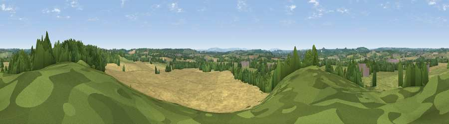

Viewpoint near Wootton Wawen
#41739 in England · top 88% of its area beats it · near Wootton WawenWhere it is
The exact computed spot (SP 16425 62475). Click the marker for map links.
The view, rendered

A 360° render of this exact spot computed from the terrain model, tree cover and land cover — summer colours, afternoon light, calibrated against photographs of famous viewpoints. Real trees, hedges and buildings will differ in detail.
The panorama
Grey silhouette: terrain skyline in each direction (720 bearings, Earth curvature and refraction included). Dashed green: skyline with trees (+15 m) and buildings (+8 m) as obstacles. Blue strip: how far the ground is visible on each bearing.
Where the view opens
Wedge length = distance to the farthest visible ground on that bearing (vegetation-aware). Rings at 10, 25 and 50 km.
What fills the view
39% grassland · 39% cropland · 20% woodland · 2% built-up
Angular shares of the visible panorama (visual magnitude), not map area. Landscape diversity 0.50 (0–1 Shannon).
Key numbers
More beautiful places nearby
The staircase of upgrades: each row has a higher view potential than everything closer. Driving times are estimates from straight-line distance, calibrated against real road routing — check an actual route before setting out.
| Place | Direction | Drive | Score |
|---|---|---|---|
| Viewpoint near Langley | ENE · 1 km | ~3 min | 27.3 |
| Viewpoint near Aston Cantlow | SW · 4 km | ~10 min | 40.3 |
| Bannam's Wood | WNW · 5 km | ~11 min | 41.0 |
| Lodge Hill | W · 5 km | ~12 min | 64.0 |
| Viewpoint near Meon Vale | S · 17 km | ~30 min | 77.0 |
| Broadway Hill | S · 27 km | ~43 min | 77.7 |
| Viewpoint near Elmley Castle | SW · 30 km | ~47 min | 80.5 |
| Bredon Hill | SW · 30 km | ~47 min | 83.0 |
52.26020, -1.76077 · source: screening · position refined by local search. Computed location — check access rights before visiting.